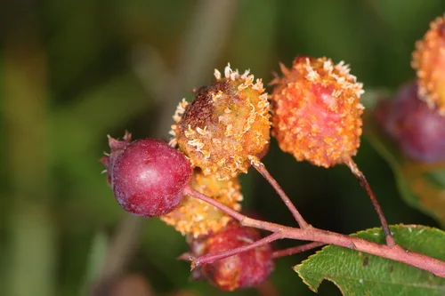

Orange spore tubes crowd hawthorn fruit
An affected hawthorn can bear fruit covered with orange material and tiny tubular projections. Their shape and position help distinguish rust from insect eggs on the surface.

What to look for
Examine the surface of a misshapen hawthorn fruit with a hand lens. A crowd of short projecting tubes, often with orange material among them, fits cedar-quince rust.
Check the pattern
Check nearby fruit and young twigs. This rust commonly affects those parts. A few orange leaf spots alone are less specific because several related rusts alternate between junipers and rose-family hosts.
What to do
Remove badly damaged fruit where practical. Inspect nearby junipers in wet spring weather for orange gelatinous growth on swollen branches. Photograph both hosts if present without assuming the nearest juniper is the source.
When to check again
Note whether the following crop suffers more than occasional blemishes. A specialist can use host identity, fruit and twig symptoms, and local rust records to advise on susceptible plantings.
Keep both a close and a wide view
Photograph one affected fruit against plain paper, then photograph its cluster in place. Keep the date with each image. The orange material may weather away, while the distorted fruit and the location of the projections remain visible longer.